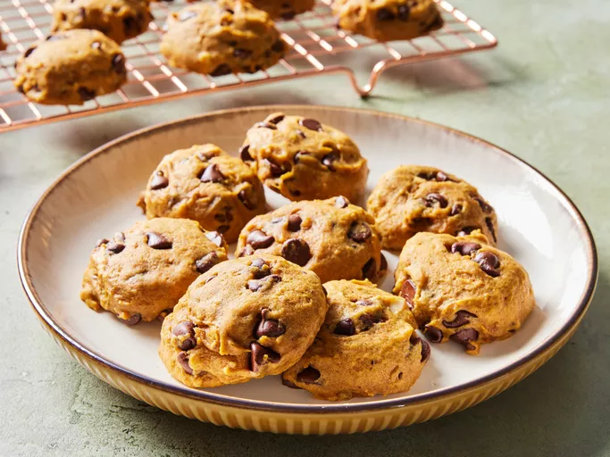

Cookies

Description
These pumpkin chocolate chip cookies are perfect for those of us who love all things pumpkin pie and chocolate.
These cake-like cookies are always a big hit.
I think they taste best when they are cold from the refrigerator.
Ingredients
- Pumpkin
- oil
- Egg
- sugar
- milk
- salt
- leaveners
- flour
- cinnamon
- walnuts
- chocolate
- vanilla
The steps
- Combine the wet ingredients.
Dissolve the baking soda in milk, then stir it in.
- Combine the dry ingredients,
then stir the mixture into the wet ingredients.
- Stir in the walnuts, chocolate, and vanilla.
- Drop the dough onto cookie sheets and bake until the cookies are firm.